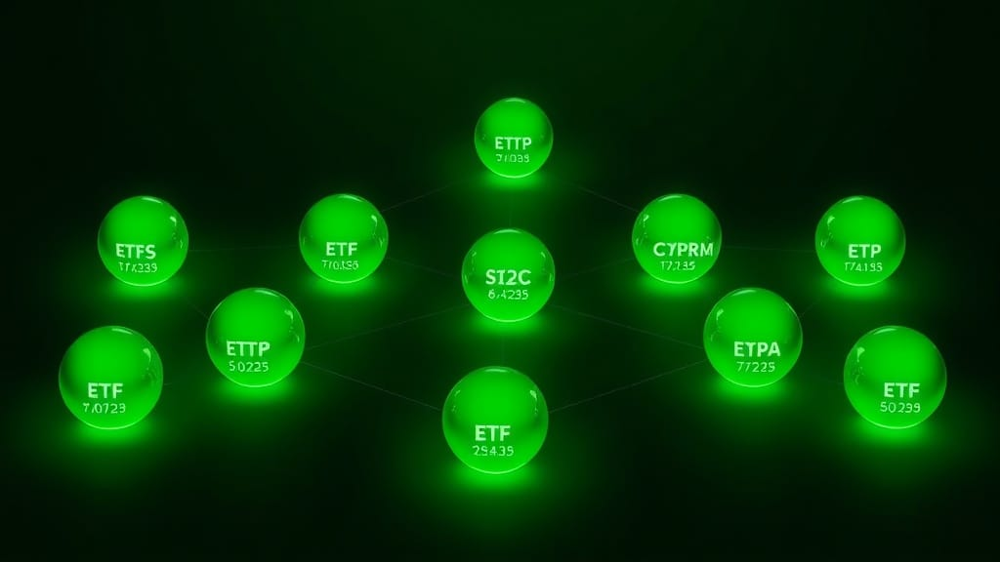

The 10 Best ETFs for Every Investor Goal in 2026 (Growth, Income, Safety, Diversification)
The 10 best ETFs for 2026 — VTI, VOO, VXUS, BND, SCHD, VNQ, QQQ, VWO, USMV, ICLN — organized by goal. Plus 4 portfolio templates from simple to aggressive.
Z Zar · 01 Jun 2026 — 9 min read

Disclosure: ZarWealth uses Amazon and other affiliate links throughout this article. We receive a small commission on qualifying purchases, at no additional cost to you. This helps keep ZarWealth free of paywalls and intrusive ads. Always do your own research before investing.
Want to go deeper on this? See How to Invest in Healthcare Stocks and ETFs.
For the full breakdown, read What Is a Mutual Fund and Should You Invest in One.
Want to go deeper on this? See Best Monthly Dividend Stocks for Passive Income.
Want to go deeper on this? See How to Invest in Infrastructure ETFs.
📈 Investing Part of our Complete Investing Guide — the 10 best ETFs for every investor goal in 2026, organized by what you're trying to achieve.
There are 3,500+ ETFs trading in the US in 2026. For most investors, only 8-12 of them actually matter — and the right ones depend entirely on what you're trying to accomplish. Growth? Income? Safety? Global diversification?
Most "best ETF" lists rank funds by expense ratio or fund size without asking what you actually need. This guide is different. The 10 best ETFs for 2026 are organized by investor goal, with one cornerstone pick per category — the fund you'd hold if you could only own one ETF in that bucket.
If you're newer to ETFs, our breakdown of ETF vs mutual funds covers the foundational tradeoffs before you pick specific funds.
How to Pick the Best ETFs for Your Portfolio in 2026
Four criteria separate the best ETFs from the rest:
1. Expense ratio. Over 30 years, a 0.50% difference in fees costs roughly 15% of your final balance. The best ETFs in 2026 charge 0.03-0.10%. Anything above 0.40% needs strong justification.
2. Liquidity. Daily volume matters because illiquid ETFs have wider bid-ask spreads — you pay a hidden cost every time you trade. Stick to ETFs with $1B+ in assets and 100k+ daily volume.
3. Tracking error. An index ETF's job is to mirror its benchmark. The best ETFs track within 0.05% of their index annually. Cheap funds with sloppy tracking are not actually cheap.
4. Tax efficiency. ETFs are structurally more tax-efficient than mutual funds (in-kind redemptions avoid most capital gains distributions). Within ETFs, broad-market funds beat narrow sector funds for tax efficiency.
The 10 Best ETFs for 2026, by Investor Goal
For each goal below, we list the single cornerstone pick — the ETF you'd hold if forced to choose one — followed by 1-2 strong alternatives.
1. Best ETF for US Stock Market Exposure: VTI (Vanguard Total Stock Market)
Expense ratio: 0.03%. Holdings: 4,000+ US stocks across all market caps. Why it wins: the broadest, cheapest, most liquid US equity ETF available. Holds 100% of the investable US market — large, mid, and small caps in correct market-cap weights. The default core holding for any portfolio that needs US equity exposure.
Strong alternatives: ITOT (iShares Core S&P Total US, 0.03%) and SCHB (Schwab US Broad Market, 0.03%) — functionally equivalent. For a deeper comparison see our breakdown of the best total market ETFs.
2. Best ETF for S&P 500 Index Investing: VOO (Vanguard S&P 500)
Expense ratio: 0.03%. Holdings: the 500 largest US public companies. Why it wins: if you specifically want the S&P 500 (vs total market), VOO is the cheapest and most liquid. SPY (SPDR S&P 500) is older and more liquid for day traders, but for long-term holders the 0.03% expense beats SPY's 0.0945% over decades. Our full review of the best S&P 500 ETFs in 2026 compares VOO, SPY, and IVV side-by-side.
🟡 Free Download
The 10-Step Financial Independence Checklist
The exact framework we use to assemble a 4-6 ETF portfolio — covering allocation, account placement, and rebalancing rules.
Get the Checklist Free →3. Best ETF for International Developed Markets: VXUS (Vanguard Total International)
Expense ratio: 0.07%. Holdings: 8,000+ international stocks (developed + emerging). Why it wins: the all-in-one international equity solution. Covers developed markets (Europe, Japan, Australia) and emerging markets (China, India, Brazil) in a single fund. Eliminates US home bias at a reasonable cost. Our guide on the best international ETFs for global diversification covers VXUS vs alternatives like IXUS and VEA in detail.
4. Best ETF for Bonds and Fixed Income: BND (Vanguard Total Bond Market)
Expense ratio: 0.03%. Holdings: 10,000+ US investment-grade bonds (Treasuries, agency, corporate). Why it wins: the cheapest, broadest US bond fund. Investors who hold any bonds at all should default to BND unless they have a specific reason to do something else. Pairs naturally with VTI for a simple two-fund portfolio. For the foundational mechanics, see our guide on how to invest in bonds for beginners.
5. Best ETF for Dividend Income: SCHD (Schwab US Dividend Equity)
Expense ratio: 0.06%. Holdings: 100 US dividend-paying companies with quality screens. Why it wins: SCHD screens for both yield AND dividend growth quality, filtering out yield traps. Current yield ~3.5%, with a 10-year dividend growth rate of ~13% annually — meaning the income stream grows with inflation. The single best balance of yield and quality among dividend ETFs. Our full review of the best dividend ETFs for passive income covers SCHD vs VYM, DGRO, and HDV.
6. Best ETF for Real Estate Exposure: VNQ (Vanguard Real Estate)
Expense ratio: 0.13%. Holdings: 160+ US REITs across all sectors. Why it wins: the broadest REIT exposure at the lowest fee. REITs add real estate to your portfolio without the headaches of owning physical property — landlords pass inflation through to rent automatically. Hold in tax-advantaged accounts when possible (REIT dividends are taxed as ordinary income). See our guide on how to invest in REITs for the full strategy.
7. Best ETF for Technology Exposure: QQQ (Invesco Nasdaq-100)
Expense ratio: 0.20%. Holdings: 100 largest non-financial Nasdaq stocks (heavily tech). Why it wins: the dominant tech-heavy ETF. Concentration is real (top 10 holdings = 50% of fund), which is the point — you're betting on US large-cap tech to keep leading. Higher fee than total-market alternatives, but unmatched access to the FAANG+ companies. Our full review on how to invest in technology ETFs in 2026 compares QQQ vs QQQM (a cheaper version) and VGT.
8. Best ETF for Emerging Markets: VWO (Vanguard FTSE Emerging Markets)
Expense ratio: 0.08%. Holdings: 5,000+ stocks across China, India, Brazil, and other emerging economies. Why it wins: cheapest broad emerging markets ETF. Includes A-shares (mainland Chinese stocks), which some alternatives exclude. Emerging markets are volatile but offer growth exposure US markets can't replicate. Typically 5-10% of a diversified portfolio, not a core holding.
9. Best ETF for Low-Volatility Defensive Investing: USMV (iShares MSCI USA Min Vol)
Expense ratio: 0.15%. Holdings: 170+ US stocks selected for low historical volatility. Why it wins: downside protection without sacrificing market exposure. During 2022's market drop, USMV fell less than VTI. During strong bull markets it lags slightly. The right pick for investors who panic-sell during downturns — the smoother ride keeps you invested.
10. Best ETF for Inflation Hedging via Clean Energy: ICLN (iShares Global Clean Energy)
Expense ratio: 0.41%. Holdings: 100 global clean energy companies. Why it competes: a thematic play on the long-term shift to clean energy infrastructure — wind, solar, hydrogen, grid modernization. Higher fee than broad funds but provides exposure to a sector most index funds underweight. Position-size accordingly (3-5% of portfolio max). For a fuller treatment see our guide on how to invest in clean energy ETFs.
How to Combine the Best ETFs Into a Portfolio
You don't need all 10. Most investors only need 3-5 of these ETFs depending on age and risk tolerance.
The Two-Fund Portfolio (simplest): 80% VTI + 20% BND. Adjust the ratio by age — a 30-year-old might run 90/10, a 60-year-old might run 60/40. Hands-off, tax-efficient, beats most "diversified" portfolios over 30 years.
The Three-Fund Portfolio (Boglehead classic): 60% VTI + 20% VXUS + 20% BND. Adds international diversification. Slightly more complex to rebalance but captures global equity returns.
The Income Portfolio: 30% VTI + 30% SCHD + 20% VNQ + 20% BND. Designed for cash flow rather than maximum growth. Generates ~2.5-3.5% annual yield while maintaining equity exposure.
The Aggressive Growth Portfolio: 40% VTI + 25% QQQ + 15% VWO + 10% VXUS + 10% BND. Higher volatility, higher expected return. Best for investors 20+ years from retirement.
Best ETFs 2026 FAQ
What is the best ETF to buy and hold for the long term in 2026?
VTI (Vanguard Total Stock Market) is the single best ETF for buy-and-hold investors. Its 0.03% expense ratio, total US market coverage, and extreme liquidity make it the foundation of countless 30-year portfolios. Pair it with BND for bonds and VXUS for international exposure to build a complete portfolio with 3 ETFs.
What is the best low-cost ETF in 2026?
Several ETFs tie at 0.03% expense ratio: VTI, VOO, BND, ITOT, SCHB. At this fee level, the differences are functionally zero. Pick based on your brokerage's commission-free list (most brokerages now offer 0% commission on the major ETFs regardless of fund family). For most investors at Vanguard, VTI is the default; at Schwab, SCHB; at Fidelity, FXAIX (mutual fund version of total market).
How many ETFs should I own in my portfolio?
Three to five ETFs is the sweet spot for most investors. Fewer than three sacrifices diversification (one-fund portfolios miss international and bond exposure). More than five typically adds complexity without improving returns. A 3-fund portfolio of VTI + VXUS + BND covers ~95% of the diversification benefit available to retail investors.
Are ETFs better than individual stocks for most investors?
Yes. For 95% of investors, broad-market ETFs beat picking individual stocks over a lifetime. ETFs provide instant diversification, lower transaction costs, better tax efficiency, and eliminate the behavioral risk of concentration in losing positions. The case for individual stocks is mostly for hobbyists who enjoy research — not for serious wealth building.
What is the most tax-efficient ETF for a taxable account?
Broad-market index ETFs like VTI and VXUS are the most tax-efficient ETFs available. Their structure (in-kind redemptions) means they almost never distribute capital gains, even in years when they rebalance. By contrast, dividend ETFs (SCHD, VYM) and REIT ETFs (VNQ) are best held in tax-advantaged accounts because their distributions are taxed as ordinary income.
Should I buy ETFs or mutual funds in 2026?
For most investors, ETFs win on three dimensions: lower fees, better tax efficiency (in-kind redemptions), and intraday trading flexibility. The remaining advantage of mutual funds — automatic dollar-cost averaging — is no longer unique since most brokerages now support automatic ETF investing. Default to ETFs unless your 401(k) plan only offers mutual funds. See our breakdown of ETF vs mutual funds for the full comparison.
What is the best ETF for beginners in 2026?
VTI (Vanguard Total Stock Market) is the best ETF for beginners. One fund gives you ownership of the entire US stock market, at 0.03% expense, with no minimum investment beyond the share price (~$280 as of 2026). If $280 is too high, VTI's mutual fund equivalent VTSAX has a $3,000 minimum, or VOO (S&P 500, ~$510) is the next-best alternative. Don't overthink it — VTI as 100% of a starter portfolio is a perfectly reasonable choice for someone just beginning to invest.
The Bottom Line on the Best ETFs for 2026
The best ETFs in 2026 are the ones that match your specific goal — not a generic "top 10" list. For most investors, the answer is simpler than financial media makes it sound: hold VTI for US stocks, VXUS for international, BND for bonds, and add SCHD or VNQ if you want income tilt. Skip the sector bets unless you have a specific thesis you can defend.
The biggest mistake we see is collecting 15+ ETFs without thinking about what each one adds. A focused 3-5 ETF portfolio outperforms a diversified-on-paper 20-fund portfolio in 90%+ of real-world cases. Pick the right cornerstone for each goal, hold for decades, and let compounding do the work.
For more on portfolio construction, see our guides on the best Vanguard ETFs to buy and hold forever and how to invest in clean energy ETFs.
Want the full picture?
ETFs are one piece of a complete investing strategy. See our Investing Guide for the full sequence of asset allocation, account types, and rebalancing rules.
Once you know which ETFs fit your goals, the next step is the mix — our free ETF portfolio builder shows your stock/bond split and projects it forward.
📥 Free download: The 10-Step Financial Independence Checklist
The framework we use to build 3-5 ETF portfolios that match your specific goals and time horizon. Get the checklist free →
Disclosure: ZarWealth uses Amazon and other affiliate links throughout this article. We are not financial advisors. Always consult a fiduciary advisor for personalized investment decisions.